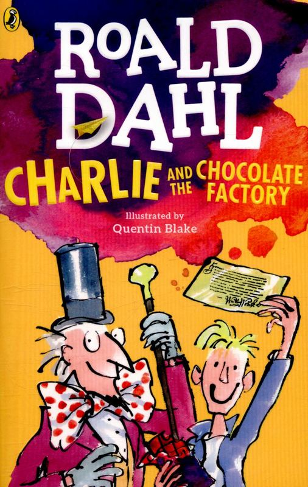

Roald Dahl
Considered as one of the greatest storytellers for children, Roald Dahl was a British novelist, eminent writer, wartime fighter pilot, and what not! His children's stories are usually told from a child's point of view, involving adult villains who hate and mistreat children, and feature that is the good, young and kind children who triumph over the old, greedy and the wicked with the help of at least one'good' adult. His innovative, playful use of language was a key element to his writing . His whimsical fantasy stories like 'Matilda', 'The BFG', 'Charlie and Chocolate Factory' feature an underlying warm sentiment, often contrasted with strange, darkly comic, and harshly violent scenarios.
